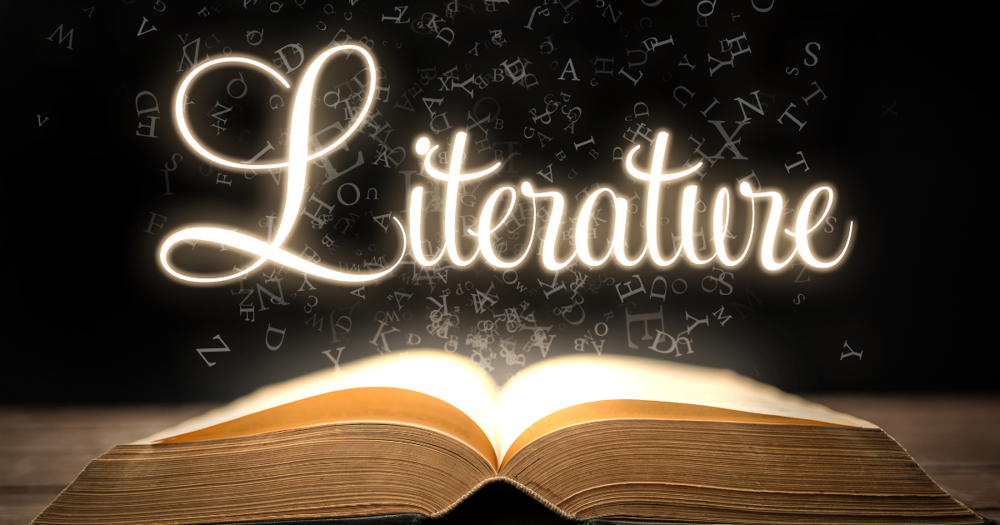
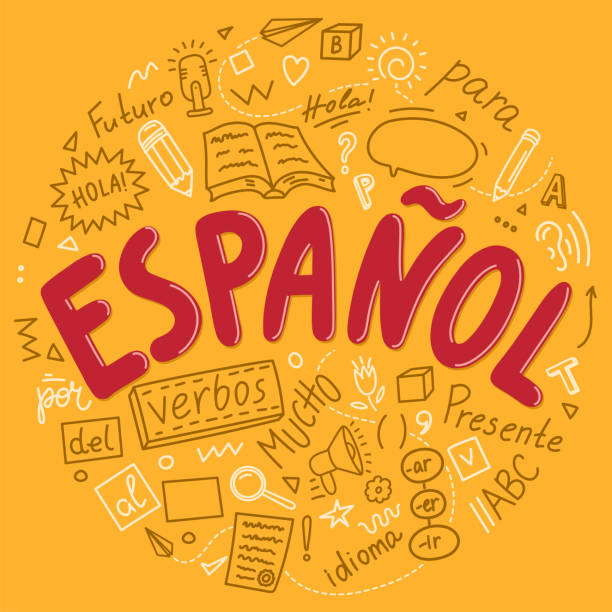
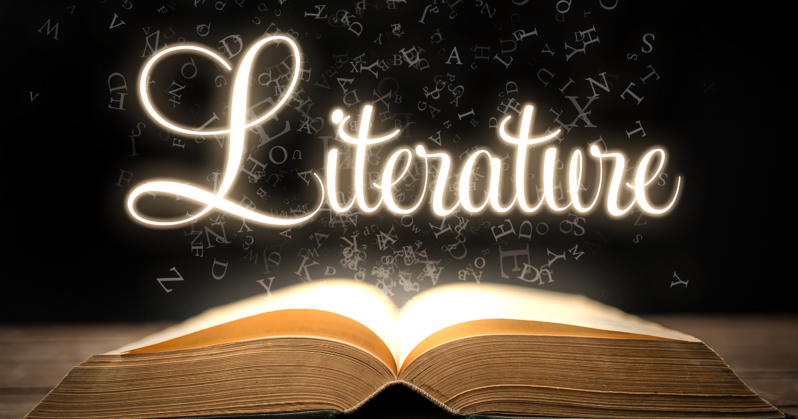
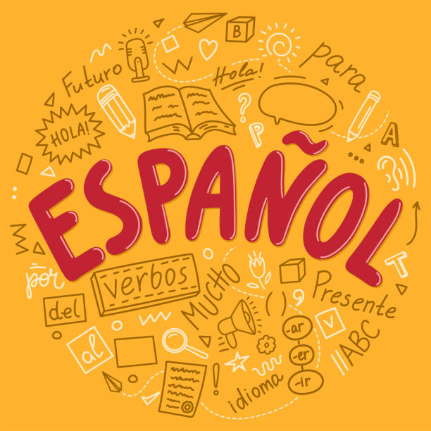
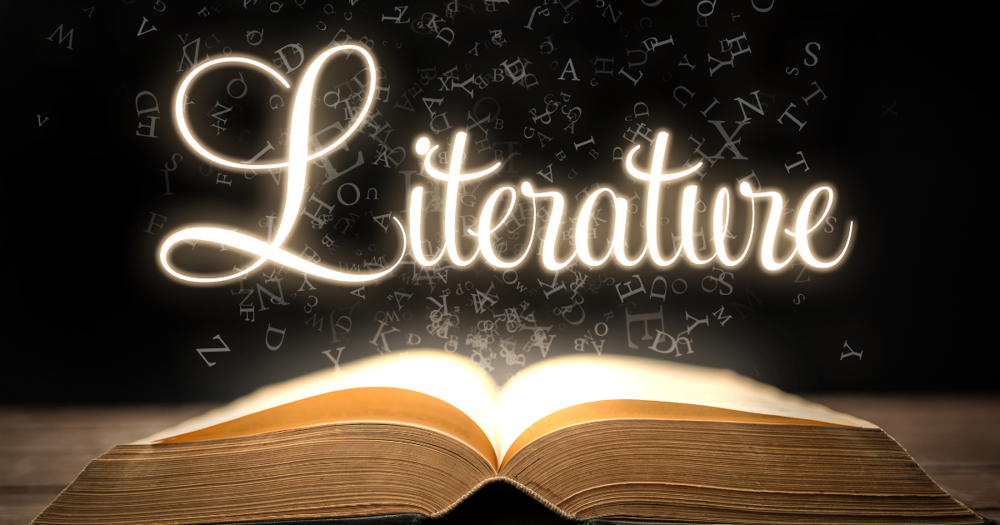
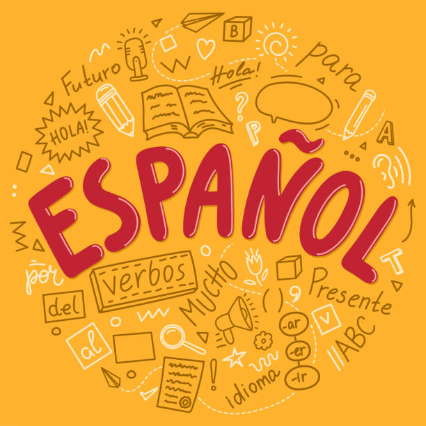
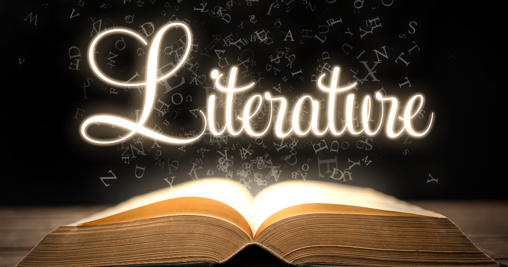
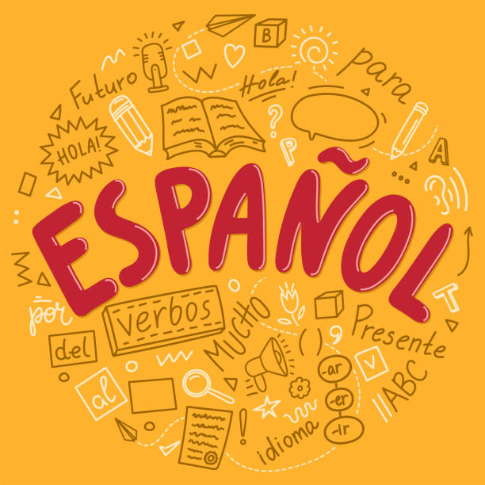

I like Science because I get to do a bunch of cool labs and because science is the class that gives me the most work, but also the biggest sense of satisfaction when I finish something. I also like that we get to learn about current topics as well as important historical events.
I like Literature because I feel like lit is a class that can easily become repetitive, and this year, I feel like I never got bored during class. I think a big part of this is the fact that we got to have a lot of choice for our MAs. Another part of this class that I enjoyed is Litshop because it gave me time to just chill out and read.
Spanish was also one of my favorite classes because I learned a lot, and like science, spanish gave me a huge sense of satisfaction when I finished something. I also liked our final each trimester because it allowed me to practice speaking spanish rather than just reading and writing spanish.